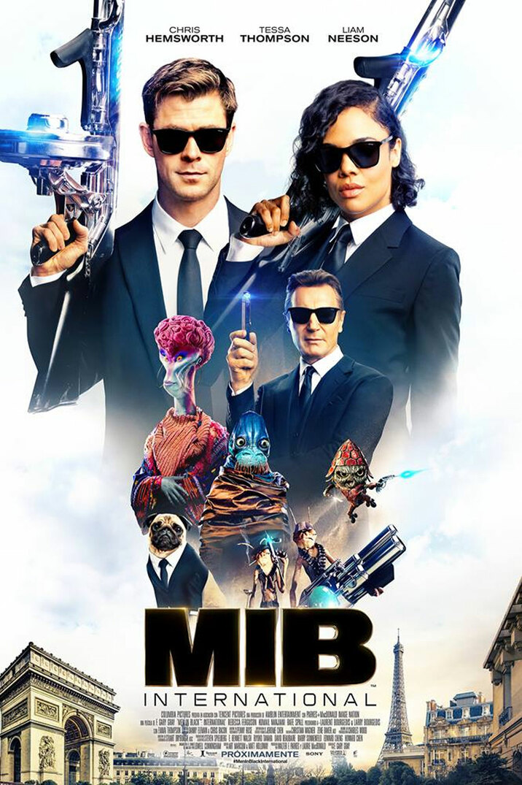
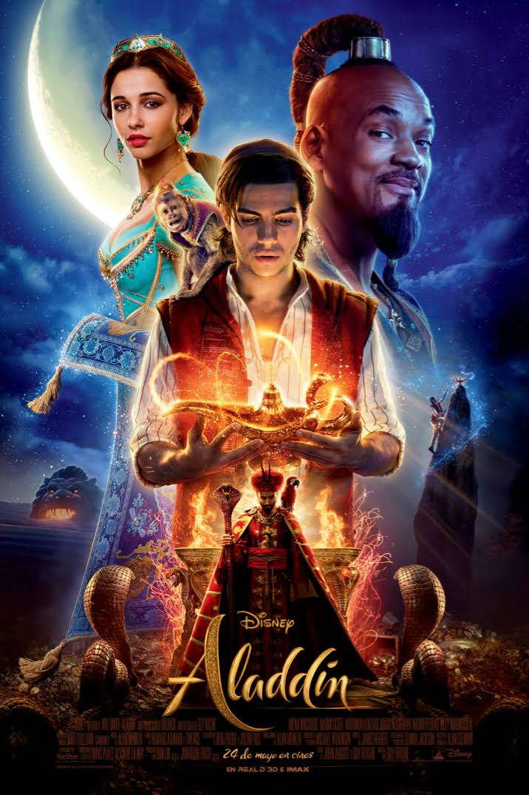
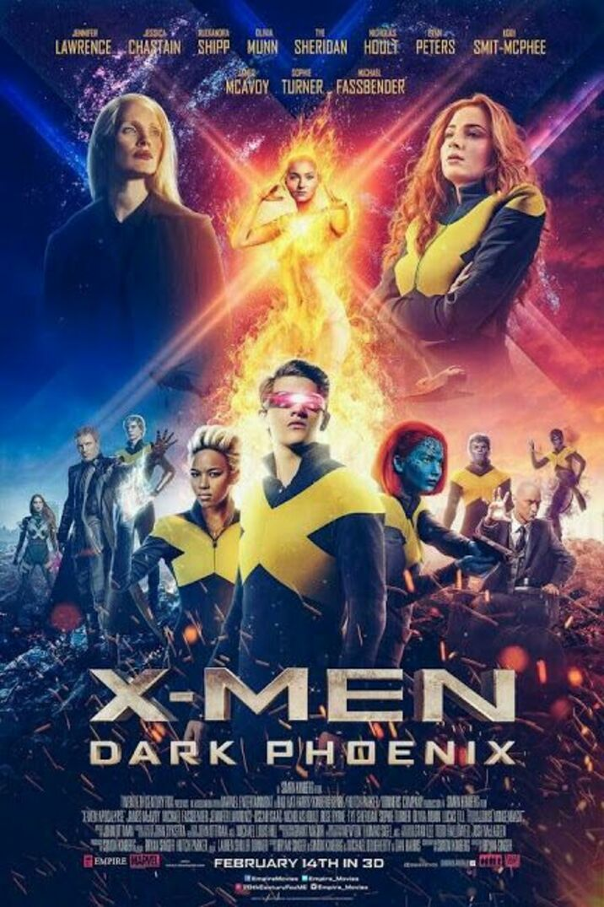
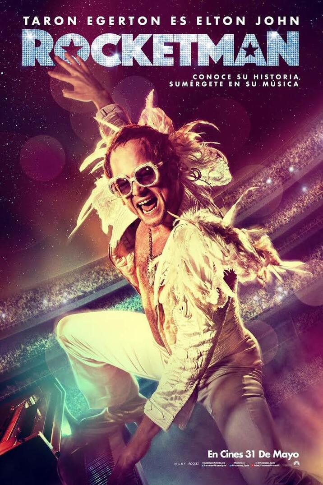

Sinopsis
Los Hombres de Negro siempre han protegido la Tierra de los parásitos del universo.
En esta nueva aventura espacial que les espera se enfrentarán a la mayor y más internacional
amenaza
hasta la fecha:
un topo dentro de la organización de los Men in Black.
Men In Black 4

Sinopsis
Rodeada por los Siete Desiertos, se encuentra la ciudad de Agrabah, una metrópoli de calles
estrechas y
plagadas de gente,
donde en lo más alto puede verse el majestuoso castillo del Sultán. Allí vive la joven princesa
Jasmine
(Naomi Scott) junto
con su padre el Sultán (Navid Negahban) y el visir real Jafar (Marwan Kenzari). La vida de todos
ellos
dará un giro inesperado
después de que el joven Aladdin (Mena Massoud) entre en la Cueva de las Maravillas y descubra la
lámpara
mágica cuyo Genio (Will Smith)
tiene el poder omnipotente de conceder tres deseos a cualquiera que la posea.
Aladdin

Sinopsis
Esta vez los X-MEN se enfrentan a su enemigo más poderoso: uno de sus propios miembros,
Jean Grey (Sophie Turner). Durante una misión de rescate en el espacio, Jean casi muere
al ser alcanzada por una misteriosa fuerza cósmica. Cuando regresa a casa, esta fuerza
no solo la ha hecho infinitamente más poderosa, también ahora es más inestable.
X-Men: Fénix Oscura

Sinopsis
Biopic que relata la vida del cantante, compositor y pianista británico Elton John (Taron Egerton).
Desde sus comienzos, como niño prodigio del piano y estudiante en la Academia Real de Música,
pasando por su juventud y su carrera como cantante, cuando se dio cuenta de que lo suyo no era la música clásica
sino la música rock, hasta convertirse en una superestrella internacional, incluyendo
su influyente y perdurable asociación musical con el letrista Bernie Taupin (Jamie Bell).
Rocketman
